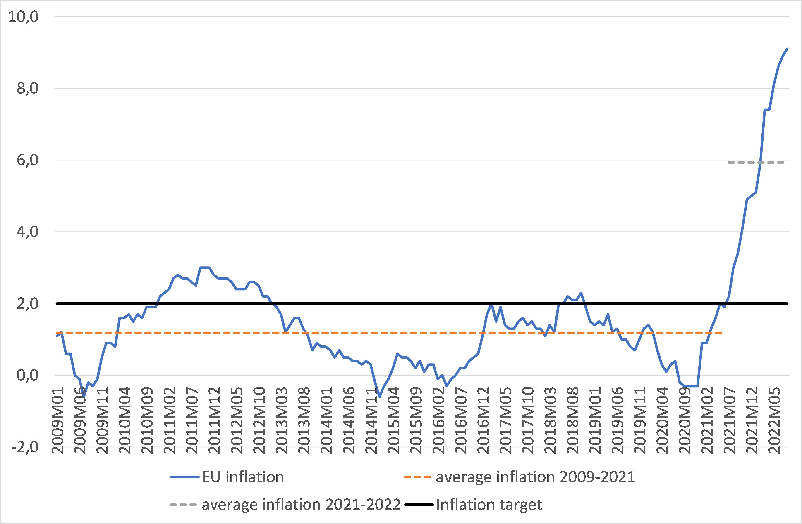
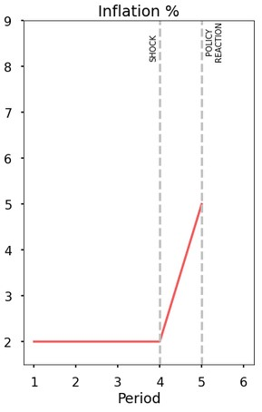

First Simulator for CORE-ECON
October 2022: The job of central banks in these years is like riding a rollercoaster. After having to fight with deflationary forces arising from the financial crisis in the late 2000’s and from the 2020-2021 COVID-19 pandemic, inflation became the number one public enemy during 2022. Several shocks that range from the disruption in the global production chain to increasing commodity prices due to the Ukraine war have increased CPI inflation to levels incompatible with central banks’ mandate of price stability. (see Figure 1)

Figure 1 Source: ...
Central bankers may yearn for past too-low inflation scenarios where, if successful, monetary policy could yield both price stability and lower unemployment. Instead, when negative supply shocks - like an oil shock - hit the economy central bankers face a nasty trade-off between price stability and unemployment, at least in the short run. Bringing inflation down to hit the target in the short run is technically possible but, is it worth the economic downturn and the increase in unemployment that this would entail? Most central banks consider that it is not since they take the inflation target as a medium run goal. Within this time frame central banks face two uncertainties that condition their decision.
A tight disinflationary policy could produce needless suffering if the underlying inflationary forces dissipate in the near future. However, a too timid response of monetary policy to inflation may trigger de-anchoring and second round effects that would push inflation further away from the target.
This interactive simulation can help you to understand some of the monetary policy dilemmas faced by central banks in the wake of the pandemic and the war in Ukraine explained above.
When the price of imported energy and or commodities goes up, certain goods such as fuel or food become more expensive for the consumer. Costs of production go up as well and firms try to pass-through these higher costs to final prices. These effects happen relatively quickly and concentrate in the first period, as shown in the figure below (Fig. 2). What happens in the following periods depends on policy. In the following sections you can explore different policy options and scenarios.

Figure 2
If there is no policy response to the rise in inflation caused by the oil shock, the situation quickly spirals out of control as inflation rises period by period (Fig. 3)
Figure 3
When the price of oil increases, inflation goes up in the shock period due to the increase in the price of fuel for consumers and the pass-through of the increase in firms’ costs to final prices. This increase in inflation has two effects relevant for next period:
Due to these two effects, in the next period nominal wages increase faster both to offset the loss in purchasing power due to the unexpected increase in past inflation and to avoid erosion of purchasing power due to higher expected inflation. Wage setters are frustrated in the attempt to restore the real wage to its initial level [on the WS curve]. Firms pass on the increase in unit labour costs arising from the rise in nominal wages to final prices to sustain their profit margin, increasing inflation above expected inflation. Therefore, in each period thereafter the attempt to restore workers’ purchasing power will maintain nominal wage growth and inflation above expected inflation, fueling an inflation spiral.
In response to an inflation shock, a Central Bank could have different approaches to recovery - each with their own costs and benefits over both short and long term.
Use Figure 5 to explore the whole path of the economy following different policy choices.Look first at the path of the real interest rate to see what the Central Bank does; then look at the outcomes for the economy.
Consider the following words taken from a 2022 speech by Jerome Powell, chairman of the US Federal Reserve:
"Reducing inflation is likely to require a sustained period of below-trend growth. Moreover, there will very likely be some softening of labor market conditions. While higher interest rates, slower growth, and softer labor market conditions will bring down inflation, they will also bring some pain to households and businesses. These are the unfortunate costs of reducing inflation. But a failure to restore price stability would mean far greater pain.(…) During the 1970s, as inflation climbed, the anticipation of high inflation became entrenched in the economic decision making of households and businesses. The more inflation rose, the more people came to expect it to remain high, and they built that belief into wage and pricing decisions. (…) History shows that the employment costs of bringing down inflation are likely to increase with delay, as high inflation becomes more entrenched in wage and price setting. The successful Volcker disinflation in the early 1980s followed multiple failed attempts to lower inflation over the previous 15 years. A lengthy period of very restrictive monetary policy was ultimately needed to stem the high inflation and start the process of getting inflation down to the low and stable levels that were the norm until the spring of last year. Our aim is to avoid that outcome by acting with resolve now."
After reading the text, answer the following questions:
The Policy Maker's Aversion to Inflation
Now that it's clear how a costly recession is necessary, we introduce the variable beta. Beta reflects the extent to which the Central Bank prioritises inflation control over growth/employment.
In the previous section we saw that an oil shock implies a trade-off for the central bank between inflation and unemployment. In this section we show that the way this trade-off is dealt with depends on the central bank’s degree of inflation aversion. [The CB uses the MR curve to determine its interest rate reaction to the shock.]
A benchmark is set where the central bank places the same weight on deviations of inflation from its target and of unemployment from equilibrium. [beta is equal to one in the CB’s loss function]
Compare the monetary policy reaction to the shock by two central banks with very different beta (for instance, beta=4 compared with the benchmark). Explain in words why with higher beta:
a. The peaks of the interest rate and of unemployment are higher
b. The central bank relaxes policy quicker and unemployment falls quicker to its new equilibrium. (hint: it has to do with inflation expectations)
Inflation recovery is not just dependent on the Central Bank's reaction.
Households and firms' expectations about inflation affect their behaviour, and their own reaction to changing interest rates. The way these expectations are formed, and the proportion of the population who share the same expectations, shapes the economy's recovery from a shock
To this point, inflation expectations have excluded any anchoring to the central bank’s target. Anchoring of inflation expectations relaxes the short run trade-off between inflation and unemployment that the central bank faces when dealing with an inflation shock.
The case with no anchoring is set as a benchmark and it matches the cases considered in previous sections [standard PC with expected inflation equal to last period’s inflation].
With higher anchoring, inflation expectations are less affected by the temporary upsurge in inflation. Therefore, the central bank needs to increase the interest rate to a lesser extent to achieve their aim of calming inflation. This results in both a lower short run increase in unemployment and a faster return of inflation to its pre-shock level. In the extreme case when there is full anchoring, the central bank just needs to adjust the interest rate to its new equilibrium level from the very onset in order to drive inflation back to its pre-shock level.
Choose different levels of anchoring and notice how anchoring improves macroeconomic outcomes of monetary policy. Explain with your own words why central banks like a high level of anchoring. Speculate about how a central bank can improve the degree of anchoring.
Consider the case of full anchoring (level of anchoring=1). See that the central bank increases interest rate to its new equilibrium value equal 4% and inflation falls back to the target in just one period. Now, in this context of full anchoring, speculate about the consequences for inflation and unemployment of not changing the interest rate after the shock…
a. …first, considering that full anchoring remains.
b. …second, discuss whether full anchoring may be in danger if the central bank persists in its passive monetary policy and the future implications for inflation.